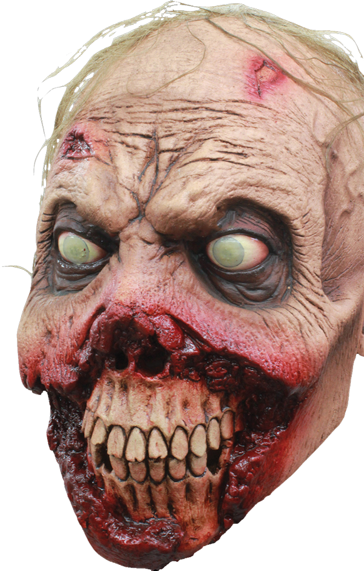

|
|
|||
| 2072 | Novatar is born. | ||
| 2080 | Novatar goes to school. | ||
| 2092 | Novatar graduates school. | ||
| 2095 | Novatar joins the Army and becomes an Airborne Ranger. | ||
| 2100 | The war of Blasted Turtles begins. The forces of Oroku Saki and Hamato Yoshi are locked in a deadly conflict. | ||
| 2101 | Novatar tortures soldiers of Oroku Saki's elite guard in order to obtain intel on Oroku Saki's force strength. | ||
| 2102 | Novatar graduates to war criminal status by torturing the family members of his enemies and earns the nickname of NOVATAR the VIOLATOR. He is infamous for force feeding his enemies the flesh of their children. | ||
| 2105 | Novatar is captured by the forces of Oroku Saki and is given 'special treatment' via the removal of his reproductive organs, which are left for him to eat after being starved. The Violator becomes the Violated. | ||
| 2109 | After being tortured for 4 years straight, NOVATAR the VIOLATED is visited personally by General Shredder and has his arm cut off and his forearm radius bone sharpened and used to slit his throat. He dies by choking on his blood as he bleeds out. | ||
| 2110 | Novatar's decapitated head is placed in the museum of war criminals.  |
||
Copyright © 2122, The Unnatural Museum of Honor, Love, and Serenity.